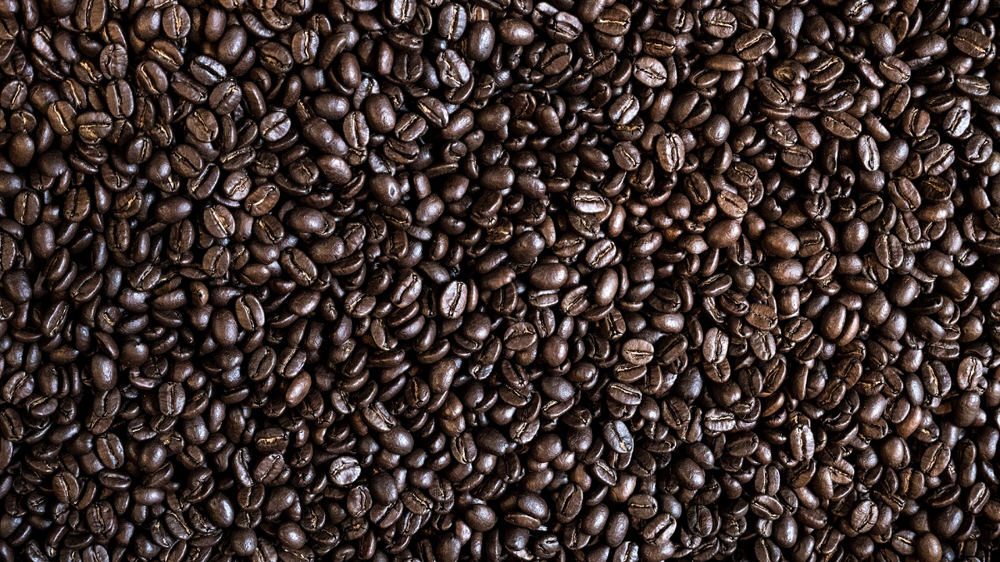
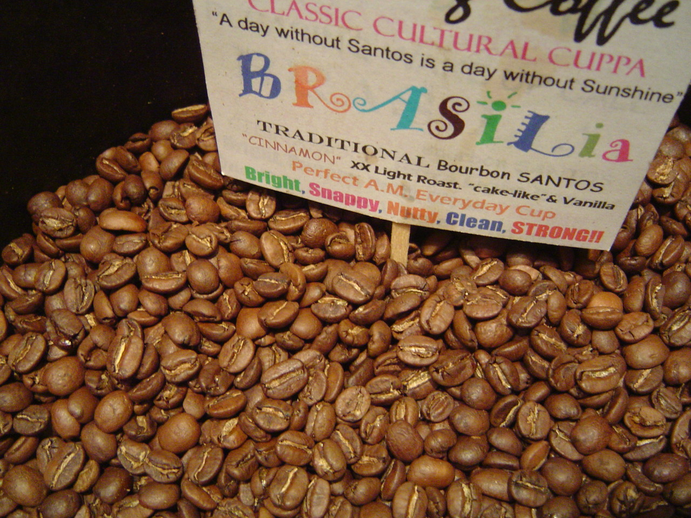
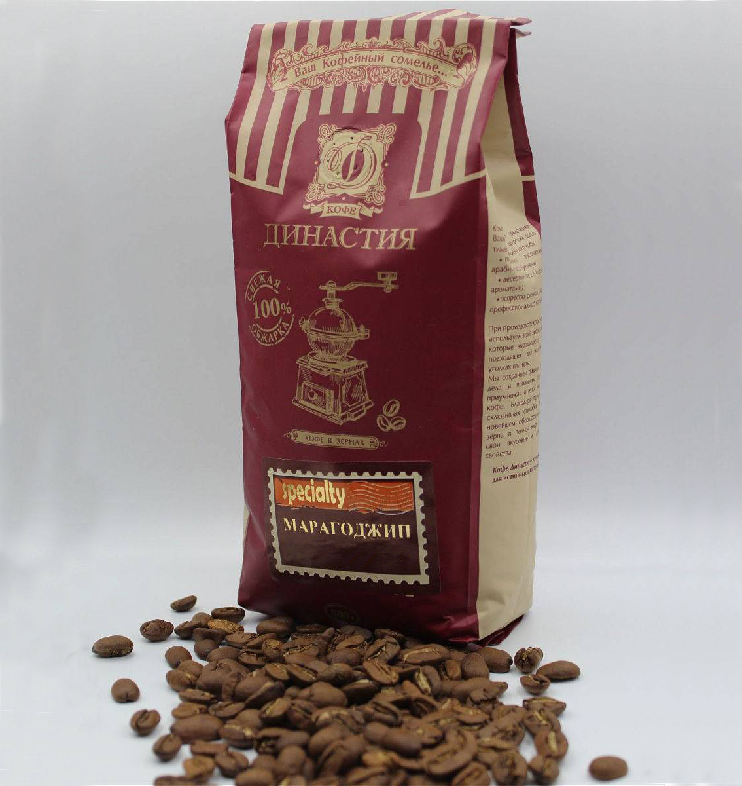
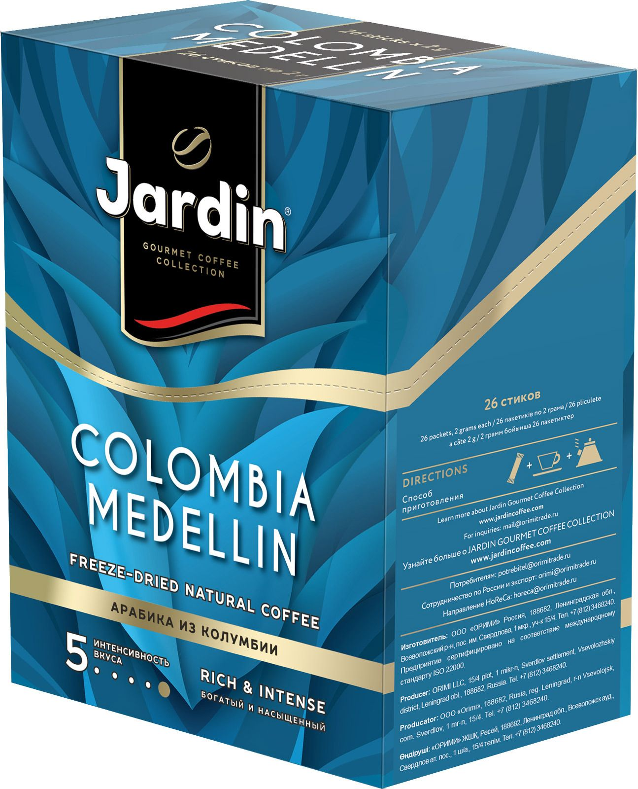
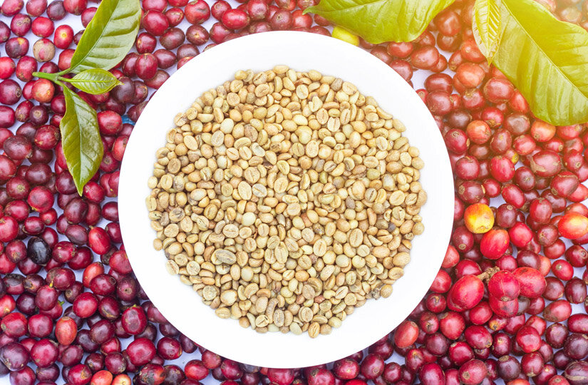

История кофе
Открытие кофе относится приблизительно к 850 году н. э., но полное признание его пришло много веков спустя. Первоначально в качестве тонизирующего средства употреблялся не отвар обжаренных зёрен, а непосредственно сырые кофейные ягоды. Чуть позже в Йемене начали готовить напиток из зрелой высушенной мякоти кофейного плода, получая напиток — «гешир» (он же кишр) — так называемый «белый йеменский кофе». Происхождение древнего названия «кофе» вошло в английский язык в 1598 году от нидерландского слова koffie. Ближайшая этимология: также кофий (1724 год) — от араб. قهوة (qahwah; первоначально означало вид вина); женская форма слова qahwah (также означающего «тёмный», «сухой», «кислый»), предположительно, была выбрана как аналог женской формы слова khamr (خمر, «вино») и первоначально означала «нечто тёмное». В ряде европейских языков слово было заимствовано через турецкое kahve. Существует версия, что qahwah произошло от имени эфиопского региона Каффы, родины кофейного дерева (в самой Каффе кофе называется buno или bunna) . В XIX веке никогда не говорили, что кофе и какао пьют — их всегда «откушивали». В произведениях Гоголя, Островского и Гончарова часто встречается фраза «Он изволил откушать кофею». В годы петровского правления словоформа «кофе» варьируется («кофий», «кофей», «кохей», «кефа», «кофа», «кофь», «кафе») в возможном соответствии с аналогами в западноевропейских и восточных языка. Для лингвистов наибольший интерес представляет в этом случае родовое оформление слова «кофе», получившее в русском языке мужской род вопреки формальному показателю финали «-е». В спорах о причинах этого некоторые лингвисты ссылаются на родовую характеристику этого слова в возможных языках заимствования (муж. род — в немецком, нидерландском и итальянском), а также на контекстуальную связь употребления слова «кофе» в ряду слов «овощ», «напиток». Согласно другому мнению, мужской род слова «кофе» следует считать наследием старой формы — кофей. Армянское название кофе — սուրճ (surč), точная этимология которого неизвестна; самое раннее упоминание слова в источниках относится к 1787 году.
В Европе первую точную и полную характеристику кофейного дерева дал Просперо Альпини, итальянский врач из Падуи, сопровождавший в 1591 году венецианское посольство в Египет. Первая чашка кофе была предложена европейцам в Риме в 1626 году папским нунцием делла Валле, который пристрастился к кофе в Иране. Через 20 лет появилась первая кофейня в Венеции, затем кофейни появились в Марселе и Франции. Считается, что таким образом была засвидетельствована растущая популярность кофе в ряду европейских стран. Тем не менее лекари тех времён восстали против употребления кофе. Первое известное упоминание кофе во Франции принадлежит торговцу кофе Филиппу Сильвестру Дюфуру. Дюфур ссылается на труды персидского врача Мухаммада ибн Закария Рази, известного на Западе под именем Разес (850—922). В своей медицинской энциклопедии Разес называет кофе «банчумом». Изучив этот труд, специалисты пришли к выводу, что целебные свойства кофе были известны древним врачам ещё до нашей эры. Один из первых наиболее значимых авторов, писавших о кофе, Абд ал-Кадир ал-Джазири, опубликовал в 1587 году работу «Umdat al safwa fi hill al-qahwa», в которой подробно описал историю кофе. Как писал ал-Джазири, первым человеком, попробовавшим кофе, в 1454 году был муфтий Адена, шейх Джамал аль-Дин аль-Дхабхани. Вскоре после этого арабские торговцы доставили кофейные зёрна в Аравию, где развели первую в мире кофейную плантацию на территории современного Йемена. Арабы называли напиток, изготовленный из этого растения, «кахва» (в переводе с арабского «отгоняющий сон») — на этом базируется вторая версия происхождения слова «кофе». Также суфисты были одними из первых, кто начал использовать кофе как средство борьбы со сном. Из Аравии кофе был отправлен в Мекку и Медину, а также другие крупные города, такие как Каир, Дамаск, Багдад и Стамбул. В странах Арабского Магриба (Алжир, Ливия, Тунис, Марокко) кофе стал известен в XV веке, после вхождения в состав Османской империи. В 1633 году после антиосманского восстания Йемен установил прямые торговые связи с европейскими странами, начав поставки кофе «Мокко». Именно в этот период наступил расцвет порта как главного кофейного торгового центра. По времени расцвет совпал с общим экономическим подъёмом страны, которую с этого времени стали называть «Счастливейшая» (от слова «йаман» — счастливый). Моха дал название сорту кофе, произведённому в Аравии. Название известного в мире кофе Моха происходит от названия порта Ал-Моха, из которого до двадцатых годов XVIII века велась активная торговля кофейными зёрнами. Затем, с началом широкого производства кофе в других странах, роль и значение порта как главного центра международной торговли кофе резко снизились. В 1511 году на Соборе законоведов, состоявшемся в Мекке, кофе именем Аллаха был проклят, а напиток, сваренный из его зёрен, признан «одурманивающим зельем дьявола» и запрещён к употреблению. Неподчинившихся жестоко карали: отрезали язык, а порой и казнили — зашивали в мешок из-под кофейных зёрен и бросали в море. В XII веке на кофе был наложен запрет Эфиопской православной церковью. Однако во второй половине XIX века отношение Эфиопии к кофе существенно изменилось. Как писал Ричард Панхерст, «это произошло только благодаря императору Менилику II, обожавшему пить кофе, и Эбону Мэтиосу, который сделал многое для того, чтобы развеять мнение духовенства о кофе как исключительно мусульманском напитке». Кофе в современном Йемене — национальный напиток. В Йемене особенно популярен традиционный йеменский кофе с имбирём. Интересно, что йеменский кофе называется по имени районов, где выращивается. В 1554 году в Стамбуле была открыта первая кофейня. Двое сирийских купцов открыли своё заведение, получившее название «Круг мыслителей». Кофейни в Стамбуле изначально служили местом отдыха и развлечений, философских и политических бесед. По этой причине уже в период правления султана Мурада IV (1623—1640) всем жителям Османской империи запретили пить кофе под страхом смертной казни. В 1511 году указом правительства Османской империи все кофейни были закрыты. Однако, уже в 1524 году по приказу турецкого султана Селима I был издан указ (фетва), провозглашавший о том, что людям разрешено пить кофе. В Каире и Египте запрет действовал с 1532 года.
Виды кофе
Насчитывается более 90 видов растений, относящихся к роду кофе (Coffea), но в промышленных масштабах используются только два из них: Coffea arabica L. — кофе аравийский (вид зерна — «арабика»); Coffea canephora Pierre ex A.Froehner — кофе конголезский (вид зерна — «робуста»). На эти два вида приходится, по разным оценкам, до 98 % производимого кофе. Этот объём делится в соотношении 69 % — арабика, 29 % — робуста. На остальные виды кофе приходится 2 % мирового производства. С кофейного дерева собирают до 3,6 кг, максимум — до 5,5 кг. Арабика Арабика — наиболее распространённый вид кофе. Вид кофейного дерева кофе аравийский, из которого получают зёрна этого сорта, произрастает на высоте от 700 до 2000 метров над уровнем моря. Зёрна, как правило, имеют продолговатую форму, гладкую поверхность, слегка изогнутую в форме буквы S линию, в которой обычно после лёгкой обжарки остаются невыгоревшие частицы кофейной ягоды (при мытой обработке). Робуста Робуста обычно считается менее изысканным сортом кофейного зерна. В то же время она содержит больше кофеина, а также часто используется в эспрессо-смесях, что удешевляет смесь. Вид кофейного дерева кофе конголезский, из которого получают эти зёрна, является быстрорастущим и более устойчивым к вредителям, чем кофе аравийский, и произрастает примерно от 0 до 600 м над уровнем моря, прежде всего — в тропических районах Африки, Индии, Шри-Ланки и Индонезии. Зёрна имеют округлую форму, цвет — от светло-коричневого до серовато-зелёного

Главные поставщики кофе
| № | Страна | Количество поставляемового кофе | |
|---|---|---|---|
| 1 | Вьетнам | 1,6 млн. тонн | |
| 2 | Колумбия | 810 тыс. тонн | |
| 3 | Эфиопия | 660 тыс. тонн | |
| 4 | Гондурас | 348 тыс. тонн | |
| 5 | Индия | 348 тыс. тонн | |
| 6 | Уганда | 278 тыс. тонн | |
| 7 | Мексика | 234 тыс. тонн | |
| 8 | Гватемала | 204 тыс. тонн |
Топ 3 вида кофе
Бурбон Сантос, Бразилия
Это один из самых высококачественных сортов. Как правило, зерна небольшие средней степени обжарки. Продается в зернах и молотый. Этому сорту свойственны стандарты вкуса – характерная кислинка, густота, шоколадно-миндальный привкус. Также кофе отличается орехово-шоколадным ароматом с нотками апельсина.

Это один из самых высококачественных сортов. Как правило, зерна небольшие средней степени обжарки. Продается в зернах и молотый. Этому сорту свойственны стандарты вкуса – характерная кислинка, густота, шоколадно-миндальный привкус. Также кофе отличается орехово-шоколадным ароматом с нотками апельсина.
Марагоджип
Этот сорт легко отличить по большим зернам. Они в 3,5 раза крупнее обычных сортов арабики, поэтому сорт еще называют «слоновье зерно». Вкус у напитка получается достаточно сложным – пряным с примесью древесины с отчетливой кислинкой. Также во вкусе можно почувствовать ягоды и нугу. В аромате присутствуют табачные ноты. Считается, что лучший марагоджип выращивают в Гватемале. Зерна этого сорта имеют идеальную форму, а напиток отличается сбалансированным вкусом и ароматом.

Этот сорт легко отличить по большим зернам. Они в 3,5 раза крупнее обычных сортов арабики, поэтому сорт еще называют «слоновье зерно». Вкус у напитка получается достаточно сложным – пряным с примесью древесины с отчетливой кислинкой. Также во вкусе можно почувствовать ягоды и нугу. В аромате присутствуют табачные ноты. Считается, что лучший марагоджип выращивают в Гватемале. Зерна этого сорта имеют идеальную форму, а напиток отличается сбалансированным вкусом и ароматом.
Медельин
Этот колумбийский сорт кофе относится к высокогорным. Обжарка зерен легкая. Это позволяет сохранить мягкую фруктовую кислинку и карамельное послевкусие. Больше всего этот кофе ценится за сочетание цветочных и шоколадных нот.

Этот колумбийский сорт кофе относится к высокогорным. Обжарка зерен легкая. Это позволяет сохранить мягкую фруктовую кислинку и карамельное послевкусие. Больше всего этот кофе ценится за сочетание цветочных и шоколадных нот.
Самый дорогой кофе в мире - Black Ivory
Название бренда Black Ivory («Блэк Айвори») переводится с английского как «черный бивень», и это прямая отсылка к тому, как именно получают самый дорогой кофе в мире. Слоны здесь выполняют ту же роль, что и малайские циветты: они проглатывают кофейные ягоды арабики, те проходят через пищеварительный тракт, и в результате получается зерно, обработанное желудочной кислотой серых гигантов. Благодаря такой своеобразной технологии содержащиеся в зернах белки расщепляются, и кофе приобретает новые свойства: он полностью утрачивает горькие оттенки, получая взамен яркие цветочно-шоколадные ноты.
По некоторым данным стоимость Black Ivory может доходить до 1500 $ за килограмм, а средняя составляет не менее 1100 $. Такая стоимость объясняется сложностью производства: чтобы получить килограмм готового качественного зерна, необходимо скормить слону минимум 30 кг ягод.
